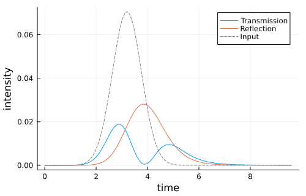

Bi-Directional Waveguide via Feedback Reduction
This example reconstructs the N=2 bidirectional-waveguide model using the SLH feedback reduction rule. The resulting Hamiltonian and Lindblad operators are then used to simulate the transmitted and reflected intensities for a coherent input pulse.
using QuantumInputOutput
using SecondQuantizedAlgebra
using Symbolics: Symbolics
using QuantumOptics
using QuantumOpticsBase: dagger
using Plots
using LinearAlgebraN = 2
# symbolic Hilbert space
ha(i) = NLevelSpace(Symbol("a$(i)"), 2)
h = tensor([ha(i) for i = 1:N]...)
# symbolic operators
σ(α, i, j) = Transition(h, Symbol("σ_$(α)"), i, j, α)
# symbolic parameters
γR(i) = Symbolics.variable(Symbol("γ^{($(i))}_R"); T = Real)
γL(i) = Symbolics.variable(Symbol("γ^{($(i))}_L"); T = Real)
Δ(i) = Symbolics.variable(Symbol("Δ_{$(i)}"); T = Real)
ϕ(i, j) = Symbolics.variable(Symbol("ϕ_{$(i)$(j)}"); T = Real)
Ein = Symbolics.variable(Symbol("E_{in}"); T = Real)Each quantum dot is treated as a two-port component: port 1 couples to the right-moving field and port 2 couples to the left-moving field. We concatenate the source, the two dots, and the phase shifter, and then eliminate the internal waveguide links with six feedback reductions.
I2 = Matrix{Int}(I, 2, 2)
G_in = SLH(I2, [Ein, 0], 0)
G_qd(i) = SLH(I2, [√(γR(i)) * σ(i, 1, 2), √(γL(i)) * σ(i, 1, 2)], -Δ(i) * σ(i, 2, 2))
G_phase(i, j) = SLH([exp(1im * ϕ(i, j)) 0; 0 exp(1im * ϕ(i, j))], [0, 0], 0)
G_unc = G_in ⊞ G_qd(1) ⊞ G_phase(1, 2) ⊞ G_qd(2)
G_t = feedback(G_unc, 1 => 3, 3 => 5, 5 => 7, 8 => 6, 6 => 4, 4 => 2)The reduced model has two external ports. In the remaining port order, the first Lindblad operator corresponds to the reflected left-moving output and the second one to the transmitted right-moving output.
H = hamiltonian(G_t)
L = jump_operator(G_t)
L_L = L[1]
L_R = L[2]γ_ = 1.0
β = 0.9
γRn = fill(γ_ * β / 2, N)
γLn = fill(γ_ * β / 2, N)
γ_add = fill(γ_ * (1 - β), N)
Δn = fill(0.0, N)
ϕn = fill(π / 10, max(N - 1, 0))
σt = 0.8
α0 = √(0.1)
t0 = 4σt
Tend = 3t0
u1(t) = 1 / (sqrt(σt) * π^(1 / 4)) * exp(-(t - t0)^2 / (2 * σt^2))
Ein_t(t) = α0 * u1(t)
p_sym = [
[γR(i) for i = 1:N];
[γL(i) for i = 1:N];
[Δ(i) for i = 1:N];
[ϕ(i, i + 1) for i = 1:(N-1)]
]
p_num = [γRn; γLn; Δn; ϕn]
dict_p = Dict(p_sym .=> p_num)
dict_p_t = Dict(Ein => Ein_t)ba = NLevelBasis(2)
b = tensor([ba for _ = 1:N]...)
H_QO = to_numeric(H, b; parameter = dict_p, time_parameter = dict_p_t)
L_R_QO = to_numeric(L_R, b; parameter = dict_p, time_parameter = dict_p_t)
L_L_QO = to_numeric(L_L, b; parameter = dict_p, time_parameter = dict_p_t)
σ_qo(α, i, j) = to_numeric(σ(α, i, j), b)
J_add = [√(γ_add[i]) * σ_qo(i, 1, 2) for i = 1:N]
function input_output(t, ρ)
Ht = H_QO(t)
J = [L_R_QO(t), L_L_QO(t), J_add...]
return Ht, J, dagger.(J)
endT = collect(0.0:0.005:1.0) .* Tend
ψ0 = tensor([nlevelstate(ba, 1) for _ = 1:N]...)
t, ρt = timeevolution.master_dynamic(T, ψ0, input_output)I_R = zeros(length(t))
I_L = zeros(length(t))
for (i, ti) in enumerate(t)
LR = L_R_QO(ti)
LL = L_L_QO(ti)
I_R[i] = real(expect(LR' * LR, ρt[i]))
I_L[i] = real(expect(LL' * LL, ρt[i]))
endp = plot(t, I_R; label = "Transmission")
plot!(p, t, I_L; label = "Reflection")
plot!(p, t, abs2.(Ein_t.(t)); color = :grey, ls = :dash, label = "Input")
plot!(
p;
xlabel = "time",
ylabel = "intensity",
legend = :best,
grid = true,
size = (500, 320),
)
p
Package versions
These results were obtained using the following versions:
using InteractiveUtils
versioninfo()
using Pkg
Pkg.status(
["QuantumInputOutput", "SecondQuantizedAlgebra", "QuantumOptics", "Plots"],
mode = PKGMODE_MANIFEST,
)Julia Version 1.12.7
Commit 6d172b025e4 (2026-08-15 08:05 UTC)
Build Info:
Official https://julialang.org release
Platform Info:
OS: Linux (x86_64-linux-gnu)
CPU: 4 × INTEL(R) XEON(R) PLATINUM 8573C
WORD_SIZE: 64
LLVM: libLLVM-18.1.7 (ORCJIT, sapphirerapids)
GC: Built with stock GC
Threads: 4 default, 1 interactive, 4 GC (on 4 virtual cores)
Environment:
JULIA_PKG_SERVER_REGISTRY_PREFERENCE = eager
JULIA_DEBUG = Documenter
JULIA_NUM_THREADS = auto
Status `~/work/QuantumInputOutput.jl/QuantumInputOutput.jl/docs/Manifest.toml`
[91a5bcdd] Plots v1.41.7
[18f9eda6] QuantumInputOutput v0.5.0 `~/work/QuantumInputOutput.jl/QuantumInputOutput.jl`
[6e0679c1] QuantumOptics v1.2.8
[f7aa4685] SecondQuantizedAlgebra v0.10.0This page was generated using Literate.jl.